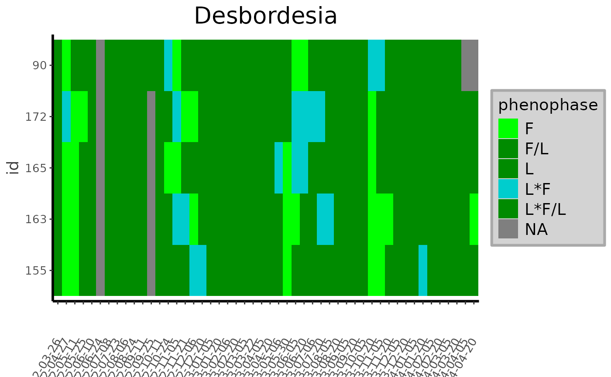
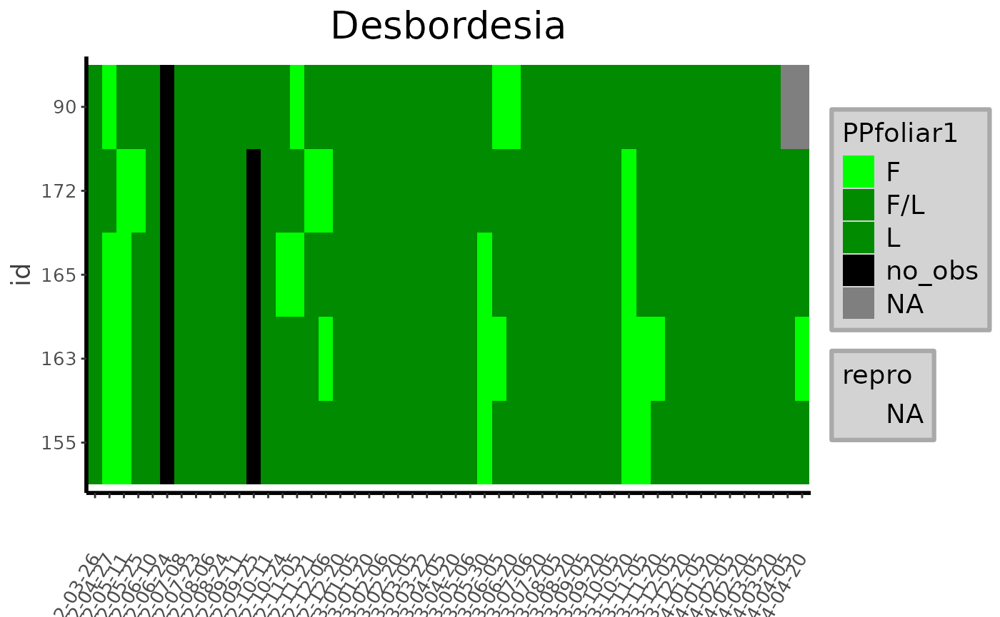
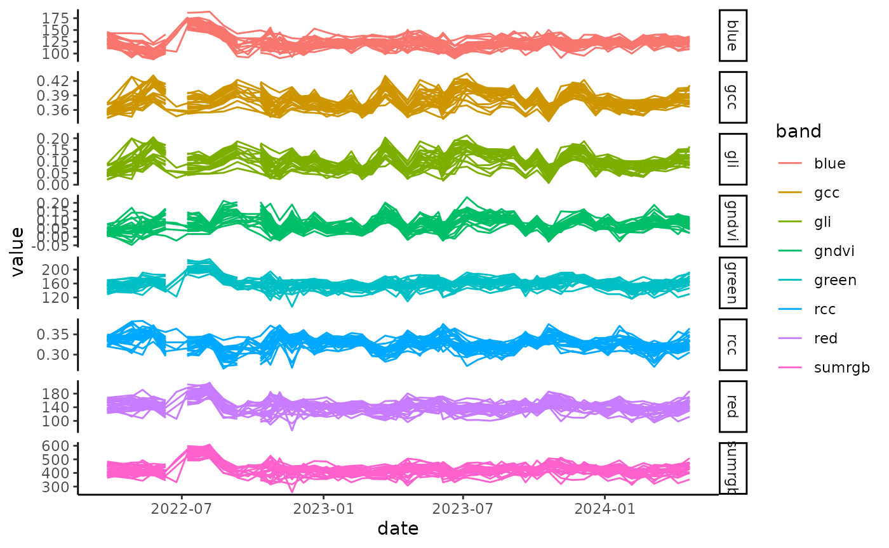
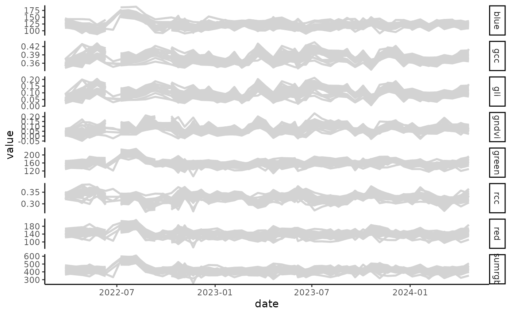

library(canObsR)
#> Warning: replacing previous import 'colourpicker::runExample' by
#> 'shiny::runExample' when loading 'canObsR'
#> Warning: replacing previous import 'DT::dataTableOutput' by
#> 'shiny::dataTableOutput' when loading 'canObsR'
#> Warning: replacing previous import 'DT::renderDataTable' by
#> 'shiny::renderDataTable' when loading 'canObsR'
#> Warning: replacing previous import 'dplyr::intersect' by 'terra::intersect'
#> when loading 'canObsR'
#> Warning: replacing previous import 'shinyWidgets::panel' by 'terra::panel' when
#> loading 'canObsR'
#> Warning: replacing previous import 'dplyr::union' by 'terra::union' when
#> loading 'canObsR'
#> Warning: replacing previous import 'terra::extract' by 'tidyr::extract' when
#> loading 'canObsR'
#> Warning: replacing previous import 'terra::quantile' by 'stats::quantile' when
#> loading 'canObsR'
library(tidyr)
library(dplyr)
#>
#> Attaching package: 'dplyr'
#> The following objects are masked from 'package:stats':
#>
#> filter, lag
#> The following objects are masked from 'package:base':
#>
#> intersect, setdiff, setequal, union
library(stringr)
data("data_labeling")
data("rgb_data")
data_labeling_simplify <- data_labeling %>% dplyr::mutate(phenophase = dplyr::case_when(phenophase ==
"NA" ~ "no_obs", stringr::str_detect(phenophase, "Fr") ~ stringr::str_replace(phenophase, "Fr", "fr"), stringr::str_detect(phenophase, "Fl") ~ stringr::str_replace(phenophase, "Fl", "fl"), phenophase == "?" ~ NA, stringr::str_detect(phenophase, ",") ~ stringr::str_replace(phenophase, ",", "/"), stringr::str_detect(phenophase, "\\;$") ~
stringr::str_sub(phenophase, 1, nchar(phenophase) -
1), TRUE ~ phenophase)) %>% dplyr::mutate(phenophase1 = phenophase) %>%
tidyr::separate(phenophase1, c("PPfoliar", "PPrepro"), ";", fill = "right") %>% tidyr::separate(PPfoliar, c("PPfoliar1", "PPfoliar2"), "\\*", fill = "right") %>%
dplyr::mutate(
PPfoliar2 = dplyr::case_when(!is.na(PPfoliar1) &
is.na(PPfoliar2) ~ "no_obs", TRUE ~ PPfoliar2),
PPFlo = dplyr::case_when(
is.na(PPfoliar1) ~
NA,
stringr::str_detect(PPrepro, "fl") ~ 1,
TRUE ~ 0
),
PPFr = dplyr::case_when(
is.na(PPfoliar1) ~
NA,
stringr::str_detect(PPrepro, "fr") ~ 1,
TRUE ~ 0
),
PPFlo_uncertainty = dplyr::case_when(
is.na(PPfoliar1) ~
NA,
stringr::str_detect(PPrepro, "\\?") &
PPFlo == 1 ~ 1,
TRUE ~ 0
),
PPFr_uncertainty = dplyr::case_when(
is.na(PPfoliar1) ~
NA,
stringr::str_detect(PPrepro, "\\?") &
PPFr == 1 ~ 1,
TRUE ~ 0
),
desynchr = dplyr::case_when(
is.na(PPfoliar1) ~
NA,
!is.na(PPfoliar2) & PPfoliar2 != "no_obs" ~
1,
TRUE ~ 0
),
PPfoliar1_uncertainty = dplyr::case_when(
is.na(PPfoliar1) ~
NA,
stringr::str_detect(PPfoliar1, "\\?") ~
1,
TRUE ~ 0
),
PPfoliar2_uncertainty = dplyr::case_when(
is.na(PPfoliar2) ~
NA,
stringr::str_detect(PPfoliar2, "\\?") ~
1,
TRUE ~ 0
)
) %>% dplyr::select(-PPrepro) %>%
dplyr::select(
site:phenophase,
PPfoliar1,
PPfoliar2,
PPFlo:PPfoliar2_uncertainty,
obs,
comments,
update,
Usable_crown
)
heatmap_Labels(data_labeling,
Specie = NULL,
Genus = 'Desbordesia',
Family = NULL,
title = NULL)
#> Warning: No shared levels found between `names(values)` of the manual scale and the
#> data's colour values.
#> Warning: No shared levels found between `names(values)` of the manual scale and the
#> data's shape values.
heatmap_Labels(data_labeling_simplify,
Specie = NULL,
Genus = 'Desbordesia',
Family = NULL,
title = NULL,
simplify = TRUE)
#> Warning: Removed 250 rows containing missing values or values outside the scale range
#> (`geom_point()`).
merge_data <- merge_values(data_labeling, rgb_data)
plot_signal(data = merge_data, Genus = 'Desbordesia')
plot_signal(data = merge_data, Genus = 'Desbordesia', slcted_id = 2614)
plot_signal(data = merge_data, Genus = 'Desbordesia', slcted_id = 2614, Band = c('gndvi','gli'))
plot_signal(data = merge_data, Genus = 'Desbordesia', slcted_id = 936, Band = c('gndvi','gli'), show_Labels = TRUE)
#> Warning in geom_point(data = dplyr::filter(data, highlight ==
#> paste(slcted_id)), : Ignoring unknown parameters: `fontface`